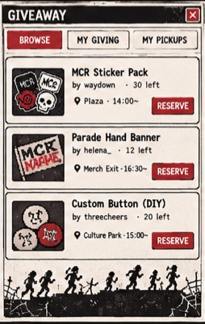
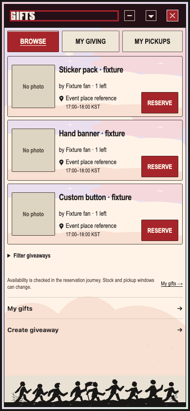
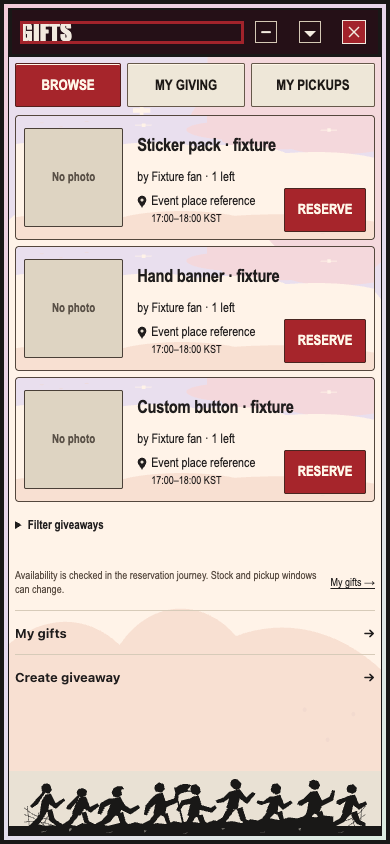

The supplied photo is normalized to 390px for inspection. Baseline and candidate use the actual root with selected-source characters and synthetic HTTP/C05. Missing item photos and truthful item/place/stock/window values stay honest. Shared chrome and decorative backgrounds are outside this CSS lease. This page does not certify full parity or live acceptance.


